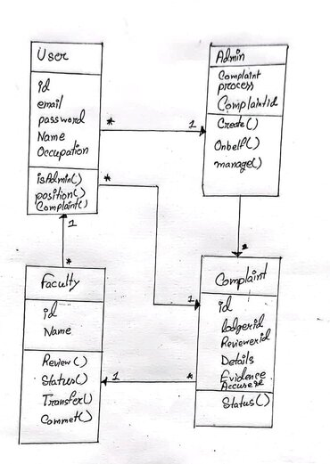
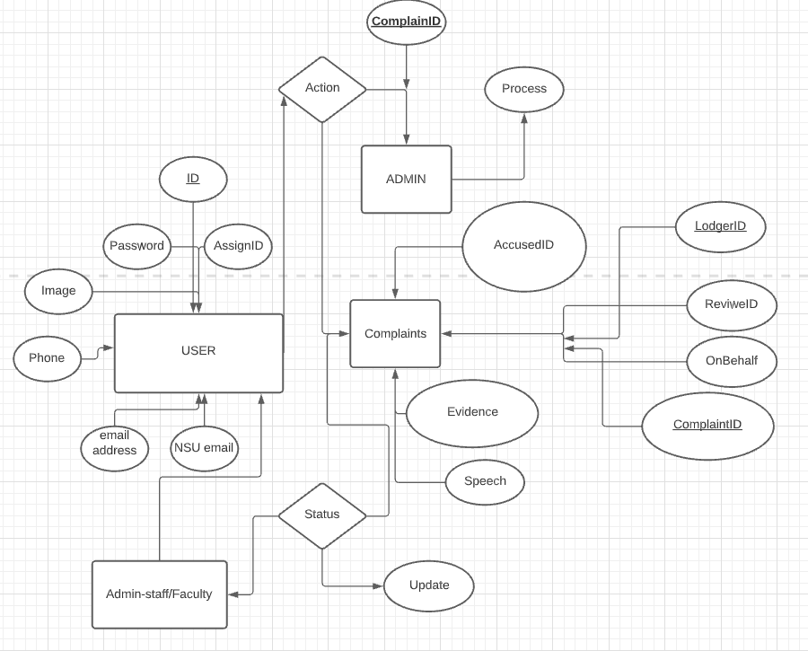

Version 1.0.0 approved
Prepared by
This software design specification is made with the purpose of outlining the software architecture & design of the NSU Complaint System in detail. The document will provide developers an insight in meeting client's needs efficiently and effectively. Moreover the document facilitaes communication and understanding of the system by providing several views of the system design.
This software design specification document would demonstrate how the design will accomplish the functional and non-functional requirements captured in SRS. The document will provide a framework to the programmers through describing the high level components & architecture, sub systems, interfaces, database design and algorithm design. This is acheived through the use of architecture patterns, design patterns, sequence patterns, class diagrams and user interfaces.
1. NSU complaint System bitbucket page:
https://bitbucket.org/nabeel_mohammed/cse327.3.5/src/master/Project/
2. Object Oriented And Classical Software Engineering 8th Edition
3. Internet
This Document was created based on architecture patterns, design patterns, sequence patterns, class diagrams and user interfaces of NSU Complaint System for Software Design Specification document.
We will use the firebase database for our web applications. To represent various data from our project, we will be using tables included within the database software.
Through our web-based program, we are going be able to straightforwardly control or recover the substance of the system's database based on commands given from the server. There will be given an interface for us to ask data or yield upgrades to the server through the server method intermediary. The clients will be given restricted get to to the server so that they can upgrade the substance.
The client program on which we'll display our project will either be on a desktop computer or a handheld gadget. The program will have two common purposes so that the clients can effectively upgrade data on the extend. The clients will primarily comprise of two variations, Admin and Users. So for this, the program will primarily comprise of two interfacing to suit the two diverse variations.
The handheld client computer program and the Desktop client computer program will permit both sorts of clients to see their variation of the computer program and they can too make changes and overhauls pertinent to the interface dole out to them. They can work on thier assigned parts such as lodging complaint, review, transfer etc. however they want.

With the help of ER diagram we made this concept of class diagram of NSU Complaint System. The diagrams consist of class attributes and some methods.In this diagrams there are three classes and 1 sub class.Admin classes consist complaint id, process request, creating user account. User login classes have name, id, email, phone attributes and method part they can modify it using add, edit,and delete their profile and complaints. Faculty classes consist complaint id, process request, review complaints methods. They can modify status & comments on complaints. Complaint classes consist complaint id, lodger id, reviewer id & on behalf complaints request because of who continuously fails to lodge complaints.

Purpose:To store data of every type of user and keep track.
Table attributes & types:
Purpose:To store data of every type of user and complaints and keeping track on them.
Table attributes & types:
Purpose:To store data of every type of data of complaints.
Table attributes & types:
Purpose:To store data of every type of data of complaint's status of ever update.
Table attributes & types:
We plan to develop a NSU complaint system,we will provide them a simple system to manage all complains which will be capable to upload,review and delete, search and retrieve complains from multiple platforms.To achieve our goal we will work as a team of 2 and we will develop different parts of the NSU complaint system.